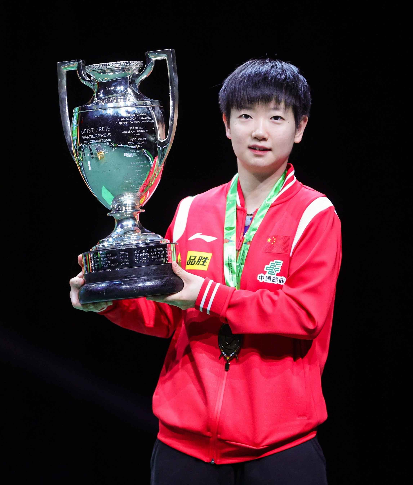
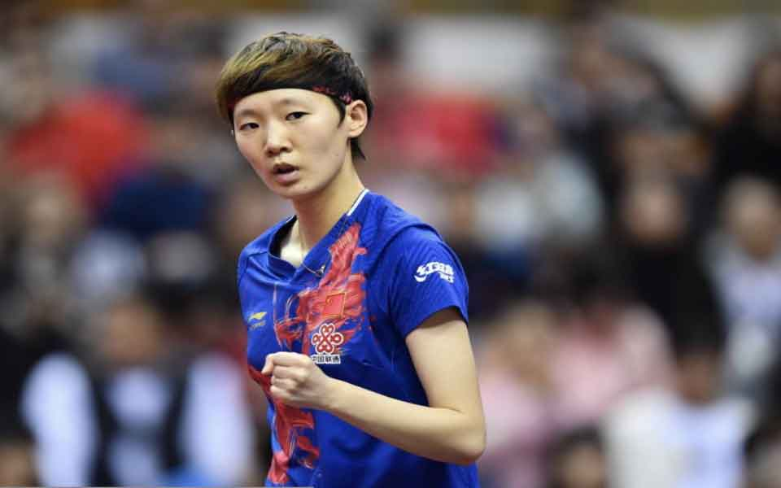

陈梦:1999年,开始练习乒乓球;2004年,陈梦进入山东省体工队;2007年,陈梦被调选送至国家队。2007年获澳大利亚青年赛女团、女单、女双三项冠军。2011年获世青赛女团、女单、女双和混双冠军;2017年亚锦赛女双冠军和女单亚。2017年国际乒联总决赛女双冠军、女单冠军。2018年1月,成为了新的女单世界第一,成为第九位登顶世界第一的中国女乒选。12月16日,2018国际乒联世界巡回赛总决赛女单冠军。2020年10月,夺得全国乒乓球锦标赛女单冠军;11月,获2020年女子乒乓球世界杯女单冠;11月22日,夺得2020年国际乒联总决赛女单冠军。12月29日陈梦所在的深圳大学乒乓球队夺得2020中国乒乓球俱乐部超级联赛女子团体冠军。2021年5月,夺得2021“直通WTT大满贯·世乒赛”暨奥运模拟赛女单冠军;7月29日,陈梦夺得2020年东京奥运会乒乓球女单冠军;8月5日,陈梦代表中国队夺得东京奥运会乒乓球女团冠军。2022年3月20日,获得WTT新加坡大满贯女单冠军。2023年9月26日,陈梦获得杭州第19届亚运会乒乓球女子团体金牌。
孙颖莎:2015年9月进入中国乒乓球国家二队,2017年1月升入国家一队。2017年6月,孙颖莎首次参加成人组赛事,便在日本公开赛中斩获女单、女双两项冠军。7月,世界排名从无直接“空降”至世界第10。同年,斩获2017年世青赛女单、女双、女团三冠以及亚青赛女单、女双、女团及混双四冠。2018年,获得青奥会女单冠军、雅加达亚运会女团冠军。2019年,获得世锦赛女双冠军、世界杯女团冠军,并首次摘得亚锦赛女单冠军及全锦赛女单冠军。2020年,孙颖莎获WTT澳门国际乒乓球女单冠军,成为WTT历史上首位冠军。2021年,孙颖莎获得东京奥运会乒乓球项目女单亚军、女团冠军。11月,获得2021休斯顿世乒赛女单亚军、女双冠军、混双冠军。12月,获得2021年WTT世界杯女单冠军。2022年1月30日,孙颖莎首次登顶世界第一,成为世界乒坛首位“00后”世界第一。2022年,获得成都世乒赛女团冠军、WTT冠军赛澳门站女单冠军,并蝉联WTT世界杯决赛女单冠军。2023年,孙颖莎获得WTT新加坡大满贯女单、女双、混双三项冠军,成为WTT大满贯赛历史上第一位“三冠王”。4月,获得WTT新乡冠军赛女单冠军。2023年5月,获得德班世乒赛女单冠军、混双冠军、女双季军,成为世乒赛历史上首位00后单打冠军,同时成就世乒赛金满贯。杭州第19届亚运会,孙颖莎获得女单、女团及混双三项冠军。

刘诗雯:1996年进入辽宁省抚顺市体校,1998年进入广州伟伦体校,2004年2月进入国家二队,2005年进入国家一队。2004年7月获得乒乓球亚洲少年赛女团、女双冠军。2007年获得全锦赛冠军。2009年广州女乒世界杯、2012年黄石女乒世界杯和2013年神户女乒世界杯三届单打冠军。2010年刘诗雯首次成为世界排名第一。2013年第十二届全运会,刘诗雯混双亚军。2014年10月,仁川亚运会乒乓球女单冠军。2015年第四次荣获世界杯女单冠军。2016年获得第53届世乒赛女团冠军以及亚洲杯女单冠军,9月,全国乒乓球锦标赛获得混双冠军。12月进入国际乒联名人堂。2017年乒乓球亚锦赛刘诗雯代表中国队3-0击败日本队,首次亚锦赛女团六连冠,也是第17次夺冠。2017年6月,杜塞尔多夫世乒赛女双冠军。2019年世界乒乓球锦标赛女单冠军和混双冠军。2019年女子乒乓球世界杯女单冠军,成为女乒世界杯历史上第一位“五冠王” 。2021年7月26日,刘诗雯搭档许昕夺得东京奥运会混双亚军。9月,刘诗雯夺得全运会混双冠军和女单季军。2022年12月,当选国际乒联运动员委员会主席。2023年8月29日,广东省二沙体育训练中心2022年度优秀运动员退役仪式在广东体育馆举行,名单中包括刘诗雯。
王曼昱:2008年入选黑龙江省集训队,2013年进入国家青年队。2016年进入国家一队。2013年,获世界青少年乒乓球锦标赛女团冠军,同年获得全国青年乒乓球锦标赛女单冠军。2014年11月,获得全国乒乓球锦标赛女团冠军。2014年12月,获世界青少年乒乓球锦标赛女单冠军和女团冠军。2015年,蝉联世界青少年乒乓球锦标赛女单冠军。2017年9月3日,获得第十三届全运会乒乓球混双冠军。2016年进入国家一队。2018年2月25日,获得2018年乒乓球世界杯女团冠军。2018年5月6日,获得第54届世界乒乓球锦标赛女团冠军。2018年8月,获得2018年雅加达亚运会乒乓球女团冠军、女单冠军。2019年,获得2019年布达佩斯世界乒乓球锦标赛女双冠军, 女单季军。2020年10月,2020年全国乒乓球锦标赛,获得女双冠军和混双冠军。2021年8月,获得2020年东京奥运会乒乓球女团冠军。2021年9月,获得第十四届全运会女单冠军、女双冠军。 2021年,获得2021赛季中国乒乓球俱乐部超级联赛女团冠军。2021年11月,获得2021年休斯敦世界乒乓球锦标赛女单冠军、女双冠军。2022年12月,获得2022赛季乒超联赛女团冠军。2023年4月,获得2023年WTT冠军赛澳门站女单冠军;9月,获得亚洲乒乓球锦标赛女单、女双冠军;9月26日,王曼昱帮助中国队获得杭州第19届亚运会乒乓球女子团体冠军。
